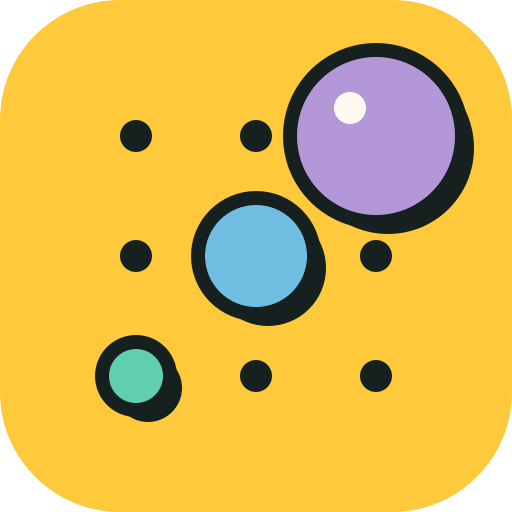

Session 1
Sunday, November 8 · 7–9 a.m. PT / 10 a.m.–noon ET
Visible Java · A CC Fest learning studio

7:00 PT
Meet, join Pickcode, and run a sketch.
7:30 PT
Predict, then watch the code run live.
8:00 PT
Guided practice with Joshua Hans.
8:30 PT
Teaching AP Java with Processing, then close.
We record sessions and share them in Google Classroom. Cameras can stay off.
Is that okay with everyone?
Already joined Pickcode? Open Lesson 1. If not, use the link in Google Classroom.
You are done when a circle slides down the window.
State is what the program remembers between frames.
int frames = 0;
void setup() {
size(400, 200);
println("setup ran");
}
void draw() {
frames = frames + 1;
background(255);
text(frames, 190, 100);
}
Predict
Who calls draw()?
float y = 0;
void setup() {
size(400, 400);
}
void draw() {
background(255);
circle(200, y, 40);
y = y + 2;
}
Predict
| Frame | Drew at y | y after the frame |
|---|---|---|
| 1 | 0.0 | 2.0 |
| 2 | 2.0 | 4.0 |
| 3 | 4.0 | 6.0 |
| 4 | 6.0 | 8.0 |
| 5 | ? | ? |
void draw() {
background(255);
circle(200, 200, 240);
float eyeShift = 1 / 2 * mouseX;
circle(150 + eyeShift / 10, 170, 30);
circle(250 + eyeShift / 10, 170, 30);
}
Trap
public class IntegerTrace {
public static void main(String[] args) {
int mouseX = 100;
System.out.println(1 / 2 * mouseX);
System.out.println(1.0 / 2 * mouseX);
System.out.println(7 / 2);
System.out.println(7 / 2.0);
}
}
Port
Predict all four lines first.
We did not call draw(). Processing did.
Guided practice with Joshua Hans
What will you try with your learners?
Want your work shown at the Session 2 check-in? Post it in Google Classroom.
Session 2: Sunday, November 15
0:00